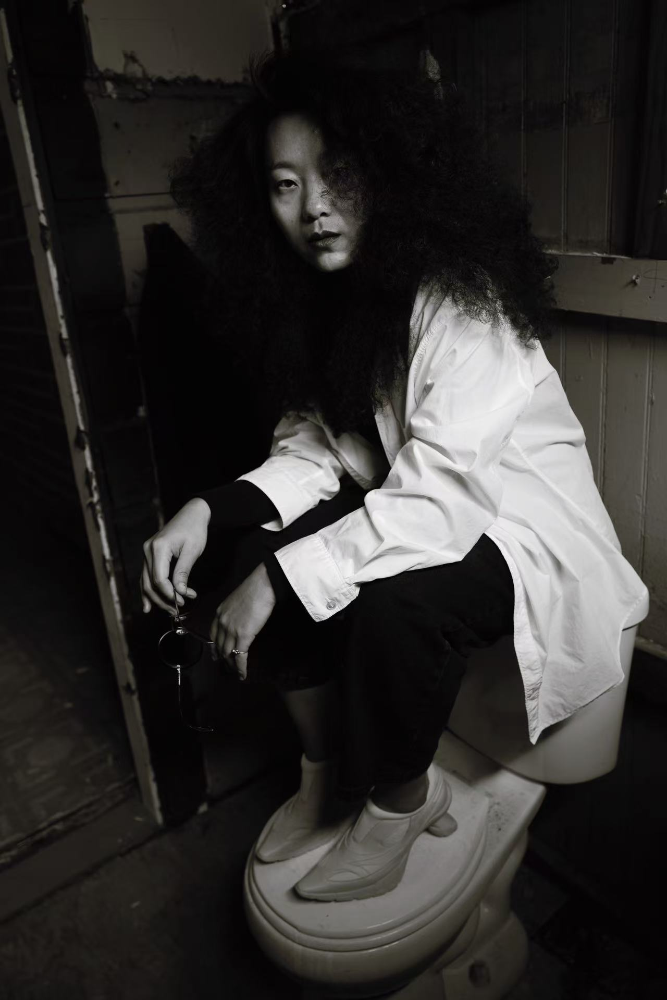

About Me
Yi Ma is an artist-researcher working across realist oil painting, jewelry, wearable objects, and material translation. Her practice observes overlooked urban forms through texture, scale, surface, and material transformation.

Yi Ma is an artist-researcher working across realist oil painting, jewelry, wearable objects, and material translation. Her practice observes overlooked urban forms through texture, scale, surface, and material transformation.
A painting-led artistic research project on pipe-based public infrastructure, visual attention, misrecognition, and exhibition as inquiry. The project moves between painting, printmaking, wearable translation, and public-facing documentation.
Jewelry, metal design, and material objects exploring force, body, scale, surface, texture, and material translation. This section includes the Nipple Brooch Series, jewelry and metal design, and material/object studies.
Education, exhibitions, selected outputs, research formation, and professional experience across literature, oil painting, jewelry design, and artistic research.